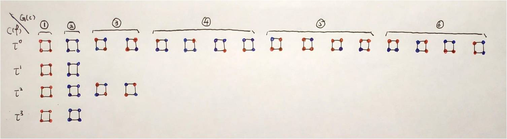
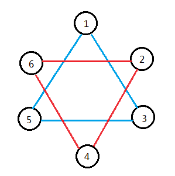

等价类计数：Burnside引理 & Polya定理
注：本文变换均为右结合，如有不便，敬请谅解。
0. 引子 (update 2020/12/21)
直接上理论会有点难受，不妨先来点简单的计数题找找感觉？
0.1 倒序同构序列计数
长度为 \(n\) 的序列 \(A\) 满足 \(\forall 1 \le i \le n, \ 1 \le a_i \le m\) ，问有多少种不同的序列 \(A\) ？
序列是无标号的，即正序和倒序记为一种方案。
容易想到一种计数方式——若不考虑同构，显然有 \(m^n\) 种选择方案。对其中的非回文序列，可以直接计数然后除以 \(2\) 去重。而回文序列正反都相同，不能直接除掉，因此对每个回文序列补上“倒序”的情况再除以 \(2\) 即可。回文序列有 \(m^{\lceil \frac n 2 \rceil}\) 种，故最终答案为 \(\frac 1 2 (m^n + m^{\lceil \frac n 2 \rceil})\) 。
PS：现在我们可以对直链卤代烷进行计数了，答案为 \(\frac 1 2 (4^2 \times 3^{n-2} + 4 \times 3^{\lceil \frac n 2 \rceil -1})\) 。
PPS：你也许马上想到了环卤代烷计数，它正是后面Polya所解决的问题。
在这个小问题中，我们“补”上的回文序列正是Burnside思想的精髓。Burnside的目标便是为此类等价类计数问题找到一种通用的解决方案。欲知后事如何，请看下文分解。
1. 群
1.1 群的概念
群 \((S,\circ)\) 是一个元素集合 \(S\) 和一种二元运算 \(\circ\) 的合称，其满足以下性质。
封闭性
对于 \(\forall a,b \in S\) ， \(\exists c \in S\) 使得 \(c = a \circ b\)
结合律
对于 \(\forall a,b,c \in S\) ， \(a \circ (b \circ c) = (a \circ b) \circ c\)
单位元
\(\exists I \in S\) ，使得对于 \(\forall a \in S\) ， \(a \circ I = I \circ a = a\)
根据定义，单位元具有唯一性，即一个群只有一个单位元。
证明：设 \(a,b\) 都是 \(S\) 的单位元，则 \(a = a \circ b = b\) ，两者实质上相同。
逆元
对于 \(\forall a \in S\) ， \(\exists a^{-1} \in S\) ，使得 \(a \circ a^{-1} = a^{-1} \circ a = I\)
根据定义，逆元具有唯一性，即每个元素有且仅有一个逆元。
证明：设 \(a\) 有两个逆元 \(b,c\) ，则 \(b = b \circ I = b \circ (a \circ c) = (b \circ a) \circ c = I \circ c = c\) ，两者实质相同。
这也同时说明了不存在两个元素 \(a, b\) 的逆元是同一个元素 \(c\)，因为 \(c\) 只有唯一一个逆元。
即逆元是一一对应的。
1.2 更抽象的群
我们更进一步，将 \(S\) 中的每一个元素视为一个函数， 默认 \(\circ\) 代表函数的复合，即 \((f \circ g) (x) = f(g(x))\)。所以现在一个群可以只用一个函数集合 \(S\) 来表示。
例如，记 \(r_\theta (x)\) 表示将 \(x\) 旋转 \(\theta\) 度，那么 \(S = \{ r_{0^\circ}, r_{90^\circ},r_{180^\circ},r_{270^\circ}\}\) 就是一个群。
证明一下，显然有封闭性和结合律。
单位元是 \(r_{0^\circ}\) ，因为 \(r_{0^\circ} (r_\theta(x)) = r_{\theta^\circ} (r_0 (x)) = r_\theta(x)\)
\(S\) 中元素 \(r_\theta\) 的逆元便是 \(r_{360^\circ - \theta}\) ，因为他们两个卷起来就是 \(I = r_{0^{\circ}}\)
1.3 提示
由于群满足封闭性，所以我们在寻找群的时候一定要“找完”所有可能的状态，例如 \(\{ r_{0^\circ}, r_{90^\circ}\}\) 就不是一个群。
2. Burnside
记号说明：通常使用 \(a,b,c,d \in C\) 表示计数对象，而 \(f,g,h \in G\) 表示变换。
2.1 等价
给定一个作用在计数集合 \(C\) 上的变换集合 \(G\)，若 \(C\) 中计数对象 \(d\) 可以由计数对象 \(c\) 通过 \(G\) 中变换得到，即 \(\exists f \in G\) 使得 \(d = c \circ f\)，我们便称 \(c\) 与 \(d\) 等价，记作 \(c \sim d\) 。
\(G\) 其实就是个函数集合，其中的函数都接受 \(C\) 中元素作为参数，输出也是 \(C\) 中元素。
类似的我们记 \(f(c)\) 为 \(c \circ f\) ，表示对计数对象 \(c\) 做变换 \(f\) 。
我们同样可以对一个函数做变换，即 \(f \circ g\) 是允许的。请参考上文更抽象的群 。
在Burnside中，我们要求 \(G\) 是一个群。这样我们可以导出一些关于等价的性质。
自反性
\(a \sim a\)
因为 \(G\) 是群，故有单位元 \(I \in G\) ， \(a \circ I = a\) ，满足等价定义。
对称性
\(a \sim b \iff b \sim a\)
设 \(a \circ f = b\) ，因为 \(G\) 是群，故存在 \(f^{-1}\) 使得 \(b \circ f^{-1} = a\) ，满足等价定义。同理反向再证一次即可得出充分完全性。
传递性
\(a \sim b , b \sim c \Rightarrow a \sim c\)
设 \(a \circ f = b, b \circ g = c\)，因为 \(G\) 是群，所以 \(f \circ g \in G\)（封闭性），\(a \circ (f \circ g) = (a \circ f) \circ g = b \circ g = c\)，满足等价定义。
2.2 等价类及等价类计数
等价类即所有等价的计数元素的集合。计数集合 \(C\) 由许多个等价类构成，好比连通块。 统计 \(C\) 中有多少个等价类，就是等价类计数。
如何快速的等价类计数，便是我们接下来所研究的。
2.3 弱化版
不妨先来研究一个弱化版本，这可以帮助我们捋清思路。
2.3.1 引理
若对于 \(\forall c \in C,f \in G \quad (f \not= I)\) ， \(c \circ f \not= c\) 都成立，那么对于 \(\forall c \in C, f \in G,g \in G \quad (f \not= g)\) ，都有 \(c \circ f \not= c \circ g\) ，即与 \(\forall c\) 等价的元素有且仅有 \(|G|\) 个。
利用反证法。假设 \(\exists c,f,g\) 使得 \(c \circ f = c \circ g\) ，那么有 \(c \circ f \circ g^{-1} = c\) ，即 \(c \circ (f \circ g^{-1}) = c\) （同时因为 \(f \not= g\) ，所以 \(f \circ g^{-1} \not= I\) ），于是与假设产生矛盾，故引理成立。
对 \(c\) 做变换得到的元素两两不同，共有 \(|G|\) 种变换，故有且仅有 \(|G|\) 个元素与 \(c\) 等价。
2.3.2 弱化版Burnside
若对于 \(\forall c \in C,f \in G \quad (f \not= I)\) ， \(c \circ f \not= c\) 都成立，那么 \[ 等价类计数 = \frac{|C|}{|G|} \]
这是肉眼可得的结论。由引理，对于 \(\forall c\) ，都有且仅有 \(|G|\) 个互不相同的元素与其等价。由于等价的传递性，这 \(|G|\) 个元素是封闭的，实质上形成了许多个大小为 \(|G|\) 的等价类。那么等价类个数自然就是总计数元素个数 \(|C|\) 除以每个等价类的大小 \(|G|\) 了。
2.4 标准版
弱化版的关键之处在于引理， \(c \circ f \not= c\) 让我们知道每个 \(c\) 有 \(|G|\) 个互不相同的元素与其等价。我们将这个条件和这个引理做一些“推广”。
2.4.1 稳定核 & 不动点
稳定核 \(G(c)\) ：对于计数对象 \(c\) ，使得 \(c \circ f = c\) 的所有变换 \(f\) 的集合，即 \(\{ f \in G | c \circ f = c \}\)
不动点 \(C(f)\) ：对于变换 \(f\) ，使得 \(c \circ f = c\) 的所有计数对象 \(c\) 的集合，即 \(\{ c \in C | c \circ f = c \}\)
注意单个字母 \(G\) 代表整个变换集合；而 \(G(c)\) 是根据计数元素 \(c\) 生成的一个被 \(G\) 包含的变换集合；
注意单个字母 \(C\) 代表整个计数集合；而 \(C(f)\) 是根据变换 \(f\) 生成的一个被 \(C\) 包含的计数集合。
2.4.2 引理1
\[ \sum_{c \in C} |G(c)| = \sum_{f \in G} |C(f)| \]
证明： \[ \begin{aligned} \sum_{c \in C} |G(c)| &= \sum_{c \in C} \sum_{f \in G} [c \circ f = c] \\ &= \sum_{f \in G} \sum_{c \in C} [c \circ f = c] \\ &= \sum_{f \in G} |C(f)| \end{aligned} \]
其实质是更换枚举方式。
2.4.3 引理2
对于 \(\forall c\) ， \(G(c)\) 是个群。
分别证明群的四个性质即可。
封闭性
对于 \(\forall f,g \in G(c)\) ， \(c \circ (f \circ g) = (c \circ f) \circ g = c \circ g = c\) ，所以 \(f \circ g \in G(c)\) 。封闭性得证。
结合律
\(G(c) \subseteq G\) ，结合律直接由 \(G\) 给出。
单位元
\(c \circ I = c\) ，所以 \(I \in G(c)\) 。（这里的 \(I\) 代指 \(G\) 的单位元）
逆元
对于 \(\forall f \in G(c)\) ， \(c \circ f^{-1} = (c \circ f) \circ f^{-1} = c \circ (f \circ f^{-1}) = c\) ，所以 \(f^{-1} \in G(c)\) 。
Extra (update 2020/03/28)
有个群论定理可以直接证明上述结论：
有限群的非空封闭子集都是子群。
另外，在后面我们将会发现 \(|G(c)|\) 实际上是 \(|G|\) 的约数，这反应了拉格朗日定理：
一个有限群 \(S\) 的子群的大小是 \(|S|\) 的约数。
有趣的是，拉格朗日定理的证明实际上和下文引理3的证明几乎一模一样。
这两个定理在这里不做详细讨论，有兴趣的同学可以左转算法导论和这里（拉格朗日定理证明）
2.4.4 引理3
对于 \(\forall c\) ，记 \(S(c)\) 为与 \(c\) 等价的计数元素的集合，有 \[ |S(c)| = \frac{|G|}{|G(c)|} \]
这个引理与弱化版引理是对应关系。请对比起来理解。
我们的证明思路是：对于某个计数元素 \(c\) ，求出 对于某个确定的变换 \(f\) ，有多少个变换 \(g\) 与其作用效果相同，即 \(c \circ f = c \circ g\) 。
\[ c \circ f = c \circ g \iff c \circ f \circ g^{-1} = c \iff (f \circ g^{-1}) \in G(c) \]
即 \(f ,g\) 对 \(c\) 的作用效果相同 等价于 \(f \circ g^{-1}\) 在 \(c\) 的稳定核内。
于是对于一个变换 \(h \in G(c)\) ，根据群的基本性质，存在唯一的 \(g^{-1} = f^{-1} \circ h\) ，使得 \(f \circ g^{-1} = h\) 。变换 \(h \in G(c)\) ，所以有 \(|G(c)|\) 种取值； \(f\) 是确定的，根据逆元唯一性， \(f^{-1}\) 也是确定的；故 \(g^{-1}\) 有 \(|G(c)|\) 种取值。又由于逆元的一一对应性， \(g\) 有 \(|G(c)|\) 种取值。
即对于 \(\forall f\) ，都有且仅有 \(|G(c)|\) 个 \(g\) 与其作用效果相同。
这说明了什么？“作用效果相同”也是一种类似等价的关系，容易证明其具有传递性，于是他们是封闭的。作用效果相同的变换实质上形成 \(\frac{|G|}{|G(c)|}\) 个大小为 \(|G(c)|\) 的两两相连的连通块或者说“作用效果相同等价类”，合起来构成了整个 \(G\) 。我们便知道了 \(c\) 通过变换可以变出 \(\frac{|G|}{|G(c)|}\) 个不同的计数元素，即与 \(c\) 等价的元素有 \(\frac{|G|}{|G(c)|}\) 个，引理3证毕。
2.4.5 Burnside
\[ 等价类计数 = \frac{1}{|G|}\sum_{f \in G} |C(f)| \]
\[ \begin{aligned} \frac{1}{|G|}\sum_{f \in G} |C(f)| &= \frac{1}{|G|}\sum_{c \in C} |G(c)| \quad &\text{...引理1} \\ &= \frac{1}{|G|}\sum_{c \in C} \frac{|G|}{|S(c)|} \quad &\text{...引理3} \\ &= \sum_{c \in C} \frac{1}{S(c)} \\ &= 等价类计数 \end{aligned} \]
倒数第二个式子，每个元素贡献 \(\frac{1}{S(c)}\) ，合起来便是等价类计数。这便是等价类计数的本质。
2.5 Burnside的本质

直接除以4不行，因为前四种找不到4个等价的情况
所以强行把它们补成4个就行了。。。
Burnside就是“强行补”的过程
——zkx
Burnside的精髓就在于此。
Burnside弱化版，实际上是省掉了强行补的部分，使所有有效部分都在 \(C(I)\) 。
可以发现“群”是Burnside的唯一约束
这个约束几乎就是没有约束。。。
所以Burnside是非常通用的等价类计数法
——zkx
3. 置换群
（Burnside的内容已经结束，这里开始是Polya了）
3.1 置换
一个置换长这样： \[ (\begin{aligned} 1&,2,3,...,n \\ a_1&,a_2,a_3,...,a_n \end{aligned}) \]
其中 \(a_1,a_2,a_3,...,a_n\) 是一个 \(n\) 排列。置换是一个接受序列，输出序列的函数，它表示对每一个 \(i\) ，将原序列第 \(i\) 个数放到第 \(a_i\) 个位置上。这种括号是置换的表示方式，表示多个映射关系。
3.2 移位置换
一个普通的移位置换长这样： \[ \tau_n = (\begin{aligned} 1,2,3,...,n&-1,n \\ 2,3,4,...,&n,1 \end{aligned}) \]
即全员右移 \(1\) 位。很自然的可以拓展到 \(k\) 位移位置换： \[ \tau_n^k = (\begin{aligned} 1,2,3,...&,n-1,n \\ k,k+1,...,n&,1,...,k-1 \end{aligned}) \]
容易发现 \(\tau_n^k\) 是 \(k\) 个 \(\tau_n\) 的复合，所以我们写成乘方的形式。
3.3 移位置换图
移位置换 \(\tau_n^k\) 所形成的图：考虑将 \(n\) 个点排成一个圆圈， \(1\) 连 \(k\) ， \(2\) 连 \(k+1\) ，…，\(n\) 连 \(k-1\) 。

如图便是 \(\tau_6^2\) 形成的移位置换图，共有两个环。
3.4 移位置换环个数定理
\(\tau_n^k\) 移位置换图中环的个数为 \(\gcd(k,n)\) 。
证明的思路同样是已经使用多次的：求出对于一个数 \(a\) ，有多少个数 \(b\) 与它在同一个环内。
对于 \(\forall a,b\) ， \(a,b\) 在同一个环内的条件为 \[ \begin{aligned} a \equiv b + ik \pmod n &\iff \exists i,j \quad s.t. \quad a = b + ik + jn \\ &\iff \exists i,j \quad s.t. \quad ik + jn = a - b \\ &\iff \gcd(k,n) | (a-b) \quad \text{...裴蜀定理} \end{aligned} \]
最后两个式子之间的转化运用了二元整数解不定方程的有解条件，即裴蜀定理。
那么这样一来，对于 \(\forall a\) ，显然有且仅有 \(\frac{n}{\gcd(k,n)}\) 个数与它在同一环内，故共有 \(\gcd(k,n)\) 个环。（“在同一环内”传递性导出的封闭性，这个方法在上文已经多次使用到）
4. Polya
4.1 概念
Polya是Burnside在环同构计数问题上的一个导出结论，比朴素的Burnside更加优秀。环同构的变换群 \(G\) 是一个移位置换群，即 \[ G = \{ \tau_n^k \ | \ k \in [0,n), k \in Z \} \]
即在平面内旋转环能够变得相同的方案算作一种。
显然移位置换群是一个群 废话，证明很简单，同样是证明群的四个性质，这里不再赘述。
最简单的一类问题便是——洛谷P4980 Polya定理
给定一个 \(n\) 个点， \(n\) 条边的环，有 \(m\) 种颜色，给每个顶点染色，问有多少种本质不同的染色方案，答案对 \(10^9+7\) 取模。
本质不同定义为：只需要不能通过旋转与别的染色方案相同。
4.2 推导
有了前面那么多的铺垫，大名鼎鼎的Polya定理现在已经可以自己动手推出来了！
先写出Burnside引理，并套入移位置换 \[ \begin{aligned} 等价类计数 &= \frac{1}{|G|}\sum_{f \in G} |C(f)| \\ &= \frac{1}{n}\sum_{i=1}^n |C(\tau_n^i)| \end{aligned} \]
注： \(\tau_n^n = \tau_n^0\) ，上面从 \(1\) 到 \(n\) 的枚举是对的
\(|C(\tau_n^i)|\) 是什么？
\(\tau_n^i\) 的不动点的个数，即要求 \(\tau_n^i\) 移位置换图里同一环上点颜色相同的方案数。（为了做置换后看上去和原来一样）
根据移位置换环个数定理， \(\tau_n^i\) 有 \(\gcd(n,i)\) 个环。有 \(m\) 种颜色给 \(\gcd(n,i)\) 个环去染，显然方案数为 \(m^{\gcd(n,i)}\) 。我们不局限于本题推而广之，方案数是一个关于环个数 \(\gcd(n,i)\) 的函数 \(f(\gcd(n,i))\) 。（也可以是关于环大小 \(\frac{n}{\gcd(n,i)}\) 的函数，反正最重要的参数是 \(\gcd(n,i)\) ）
带入原式 \[ \frac{1}{n}\sum_{i=1}^n f(\gcd(n,i)) \]
诶！这个式子里面有 \(\gcd\) ！
不用抑制住冲动，我们按照常见的莫反题目套路来。 \[ \begin{aligned} 等价类计数 &= \frac{1}{n}\sum_{i=1}^n f(\gcd(n,i)) \\ &= \frac{1}{n} \sum_{d|n} f(d) \sum_{i=1}^n [\gcd(n,i)=d] \quad &\text{...把gcd提出来枚举} \\ &= \frac{1}{n} \sum_{d|n} f(d) \sum_{i=1}^{\frac{n}{d}} [\gcd(\frac{n}{d},i)=1] \\ &= \frac{1}{n} \sum_{d|n} f(d) \varphi(\frac{n}{d}) \quad &\text{...欧拉函数定义} \end{aligned} \]
好恭喜你可以在 \(O(\sqrt n)\) 的优秀时间复杂度里求得答案了！
2022/06/25 update: 需要指出的是，Polya 定理并不只适用于移位置换群。请读者自行思考，Polya 定理是否适用于任意置换群。（提示：任意置换都可以表示为若干个轮换的复合）
4.3 实现
提示一下实现上的一些细节。
快速幂作为基本技巧就不提了；
欧拉函数直接质因数分解求即可。这里会遇到一个小问题：外面一层枚举因数，里面一层分解质因数，这不 \(O(\sum_{d|n} \sqrt d)\) 了吗？
用一些黑科技可以证明一个比 \(O(n)\) 更紧的上界是 \(O(n^{\frac 3 4})\) ，实际上则有香港记者的速度（洛谷 \(n=10^9\) ， \(10^3\) 组数据可以随便跑过）
/*
洛谷P4980 Polya定理
sun123zxy
朴素写法
洛谷共2.08s
2019/12/24
*/
#include<iostream>
#include<cstdio>
#include<cstring>
#include<cmath>
#include<ctime>
#include<cstdlib>
#include<algorithm>
#include<queue>
#include<vector>
#include<map>
#include<set>
using namespace std;
typedef long long ll;
ll Rd(){
ll ans=0;char c=getchar();
while(c<'0'||c>'9') c=getchar();
while(c>='0'&&c<='9') ans=ans*10+c-'0',c=getchar();
return ans;
}
const ll MOD=1E9+7;
ll QPow(ll x,ll up){
x%=MOD;
ll ans=1;
while(up)
if(up%2==0) x=x*x%MOD,up/=2;
else ans=ans*x%MOD,up--;
return ans;
}
ll Inv(ll x){return QPow(x,MOD-2);}
ll Phi(ll n){
ll t=n;
ll ans=1;
for(ll i=2;i*i<=t;i++){
ll c=0;
while(t%i==0) t/=i,c++;
if(c) ans=ans*(QPow(i,c)-QPow(i,c-1)+MOD)%MOD;
}
if(t>1) ans=ans*(t-1)%MOD;
return ans;
}
ll N;
ll Polya(ll d){
return QPow(N,d)*Phi(N/d)%MOD;
}
void Solve(){
ll Ans=0;
for(ll i=1;i*i<=N;i++){
if(N%i==0){
Ans+=Polya(i);
if(i!=N/i) Ans+=Polya(N/i);
Ans%=MOD;
}
}
Ans=Ans*Inv(N)%MOD;
printf("%lld\n",Ans);
}
int main(){
ll T=Rd();while(T--){
scanf("%lld",&N);
Solve();
}
return 0;
}不过当然有真正 \(O(\sqrt n)\) 的写法。只需在最外层分解质因数，然后DFS的去枚举因数，这样就不用每次去分解 \(\frac{n}{d}\) 啦！于是这种写法就快更多了。
/*
洛谷P4980 Polya定理
sun123zxy
更优写法
洛谷共125ms
2019/12/24
*/
#include<iostream>
#include<cstdio>
#include<cstring>
#include<cmath>
#include<ctime>
#include<cstdlib>
#include<algorithm>
#include<queue>
#include<vector>
#include<map>
#include<set>
using namespace std;
typedef long long ll;
int Rd(){
int ans=0;char c=getchar();
while(c<'0'||c>'9') c=getchar();
while(c>='0'&&c<='9') ans=ans*10+c-'0',c=getchar();
return ans;
}
const ll MOD=1E9+7;
ll QPow(ll x,ll up,bool isM=1){
x%=MOD;
ll ans=1;
while(up){
if(up%2==0) x=x*x,up/=2;
else ans=ans*x,up--;
if(isM) x%=MOD,ans%=MOD;
}
return ans;
}
ll Inv(ll x){return QPow(x,MOD-2);}
namespace Div{
int p[30],c[30];
int pN;
void Div(int nb){
pN=0;
int t=nb;
for(int i=2;1LL*i*i<=t;i++){
if(t%i==0){
p[++pN]=i,c[pN]=0;
while(t%i==0) t/=i,c[pN]++;
}
}if(t>1) p[++pN]=t,c[pN]=1;
}
}
int N;
ll Ans;
void DFS(int pos,ll d,ll phi){
using namespace Div;
if(pos==pN+1){
Ans=(Ans+QPow(N,d)*phi)%MOD;
return ;
}
ll tpow=1,tphi=QPow(p[pos],c[pos],0)-QPow(p[pos],c[pos]-1,0);
for(int i=0;i<=c[pos];i++){
DFS(pos+1,d*tpow,phi*tphi);
tpow*=p[pos];
if(i==c[pos]-1) tphi=1;
else tphi/=p[pos];
}
}
void Solve(){
Div::Div(N);
Ans=0;DFS(1,1,1);
Ans=Ans*Inv(N)%MOD;
printf("%lld\n",Ans);
}
int main(){
int T=Rd();while(T--){
scanf("%d",&N);
Solve();
}
return 0;
}5. 总结
对于大多数题目，Burnside & Polya通常是套在最表面的那一层皮，难点一般在求 \(|C(f)|\) 或者 \(f(\gcd(n,i))\) 的部分。
6. 参考及后记
zkx / keke_046 / 彳亍 学长 《Polya计数.pptx》
思路清晰，可以看出keke学长对Polya有极其深入的理解。内容不便公布，可参考《组合数学》一书。
《算法导论》第三版 31章 数论算法
初稿写成后，在学习数论时偶然翻到这一节有对群的一些讨论，发现自己之前的理解不够优秀，做了一些订正。
之前把交换群认成群了
后记
Burnside & Polya 最开始是去年暑假keke学长为我们讲授。当时云里雾里，半懂不懂。12月的时候因为PKUWC/THUWC成为机房留守儿童（雾），就花了一两天把keke的PPT慢慢看懂了，做了最初的笔记，在接下来的几个月里修订完善。
概念多，证明绕，很容易掉进思维的陷阱。要是能一步一步把证明过程捋清楚的话，对思维能力的提升还是很大的。
任何推导的目的都是由已知得到未知。把性质与推论构成的“有向无环图”搞清楚了，才算真正弄清楚了来龙去脉。
Burnside弱化版是整理笔记时灵光一闪生造出来的一个中间步骤，希望对大家的理解有所帮助。
多次用到了“将等价类计数问题转换为有多少个元素与某个确定的元素等价，并利用等价传递性导出封闭性说明形成连通块”这一思想，很具有推广性；另外遇到一些不太好证的命题可以试试反证法。